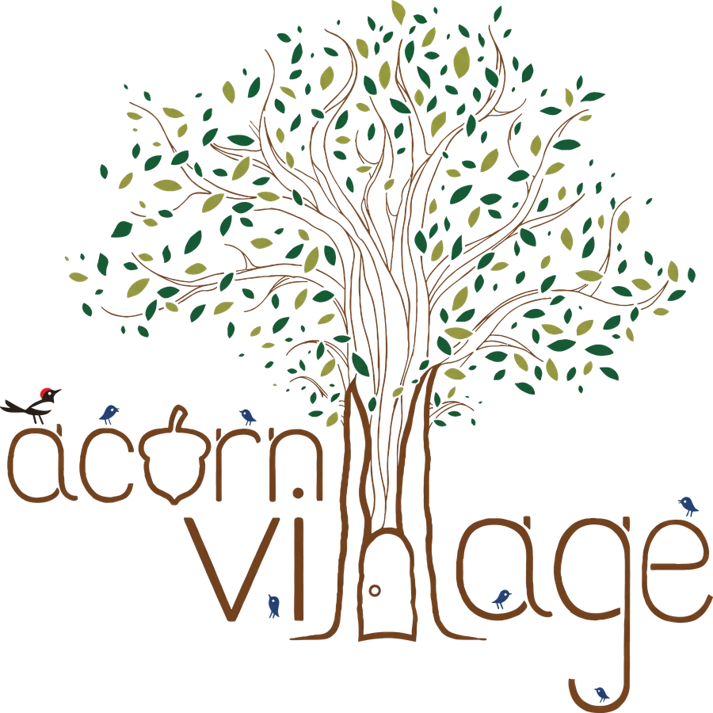

Take Hwy 154 toward Lake Cachuma and look for the Bradbury Dam Vista Point turnoff. The parking lot there is good for all classroom locations.
Saplings begin at 845am and they will take off down the trail shortly after that meeting at the Sweetwater sign.
The Acorns will meet you just down the trail from that sign in the enrichment classroom.
Woodpeckers will meet you on the far side of the parking lot near the Dam viewing area.
Enrichment pick up will be at Sweetwater sign for saplings and near woodpecker drop off for preschool.
At this location we still have access to water so water shoes are still great, but no swimming so bathing suits not necessary.
From Hwy 246, take southbound Refugio Road toward Sunstone Winery. Classrooms are before and after the bridge, on the right side. For the classroom on the far side of the bridge, please park with all tires off the road and be careful of the street there (no children in the road).
Take Figueroa Mountain Rd. past Midland and Family School. Just before a sharp right turn there is parking on the right side. Please do not park after you cross the cattle guard, and remember to drive slowly as you pass Family School.
The trailhead to the classrooms is across the street from the second parking area. It's the trailhead for Grass Mountain/Lover Loop. Follow that to the creek — from there classes split to different locations.
From Hwy 246, take the turn off for Happy N Ranch and Highline Adventure. Stay on that road until you cross the river, then take the first left and follow that dirt road until there is a slight rise through a grove of oak trees. Park on the left.
From Solvang, take Alisal Road south toward Nojoqui Falls County Park. Park near the trailhead — classes will depart from there.
Meeting spot, parking notes, and landmark to be added.
Used only when the current scheduled location becomes unsafe or unavailable (e.g. weather, fire, flooding). Park right before the tennis courts or in the main paved lot near the playground area.
Meeting spot, parking notes, and landmark to be added.